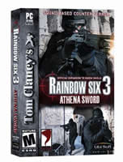

雅典娜之剑
发行公司：UBI
开发公司：Red Storm Entertainment游戏类型：FPS
发布日期：2004 年 8 月 3 日 / 2004 年 8 月 20 日
对应平台： PC
《彩虹六号3》最新资料片《雅典娜之剑》由UbiSoft旗下的Milanstudio负责开发，玩家将再次率领反恐部队Rainbow追踪一个恐怖组织的残余势力，阻止他们在世界各地发动无政府主义暴动和破坏行动。
新增元素包括：8个全新任务（地点包括意大利、克罗地亚和希腊等地中海国家）、8个多人对战版图、5种全新对战模式、3个“经典”任务（设计师选来三个深受玩家喜爱的旧任务，利用Unreal引擎重新制作），以及7种全新的真实武器（总数因而增至64种）。此外，《Athen Sword》的武器声效将由电影《黑客帝国》（The Matrix）的声效小组负责。
